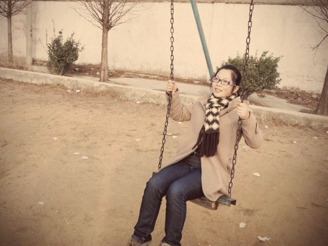

名字:
小娇
性别:女
介绍:喜欢就买，不行就分
问题
答案
新建于:2015-03-24 10:55:36 AM，更新于2015-03-29 08:51:55 PM
正文: 我也贴上我自己的照片给大家看看变化吧，人丑，将就看吧！这是最胖的时候吧大概130后来节食一段时间看上去瘦了一点真正瘦应该还是上大学吧这时候大概110多运动减肥一开始很辛苦，坚持下来后，整个人状态会好很多，也自信很多随便贴几张现在的状态，喜欢运动，体重大概在一百零几第一次回答，很乱阿！